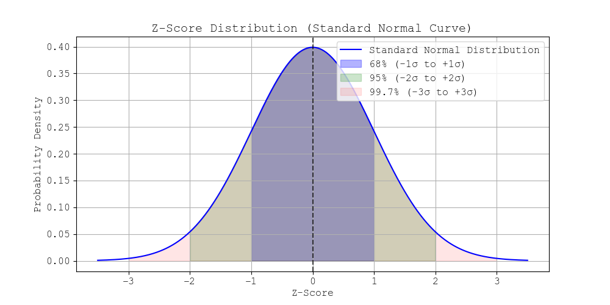

Understanding Z-Score
The Z-score (also called the standard score) indicates how many standard deviations a data point is from the mean.
The formula for the Z-score is:
Z = (X - μ) / σ
Where:
- X = individual data point
- μ = mean of the data
- σ = standard deviation
Example Calculation
Q: What is the Z-score of a student who scored 85 on a test where the class average is 75 with a standard deviation of 5?
Using the formula:
Z = (X - μ) / σ
Z = (85 - 75) / 5 = 2.0
This means the student's score is 2 standard deviations above the mean.
Z-Score Table (Standard Normal Distribution)
The Z-score allows us to calculate probabilities using the standard normal table:
Z-Score Probability
----------------------
-2.0 0.0228
-1.0 0.1587
0.0 0.5000
1.0 0.8413
2.0 0.9772
For example, a Z-score of 1.0 corresponds to a probability of 0.8413, meaning 84.13% of the data lies below this value.
Visual Representation
The standard normal distribution curve:

Above is Z Score Distribution.
- 68% of data falls between -1σ and +1σ.
- 95% falls between -2σ and +2σ.
- 99.7% falls between -3σ and +3σ.